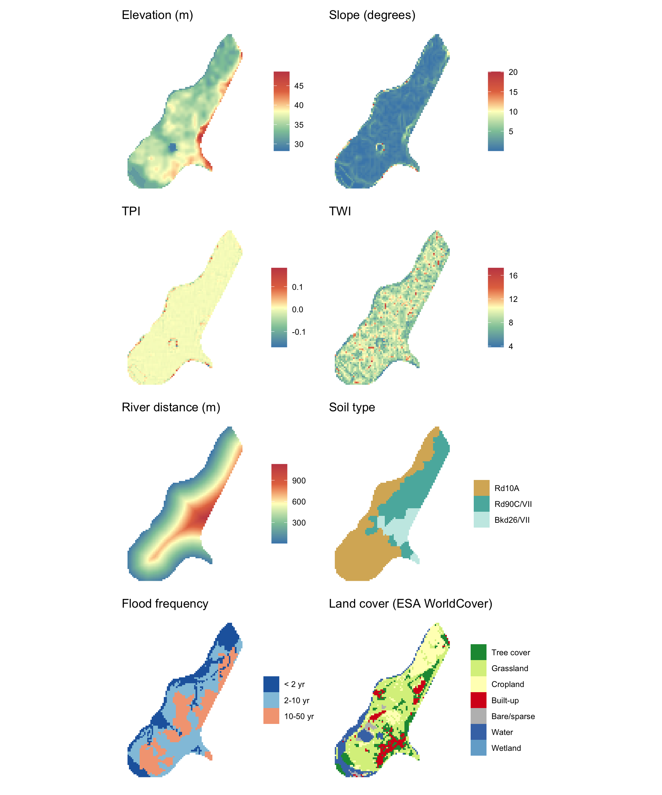

Code
library(tidyverse)
library(terra)
library(tidyterra)
library(patchwork)
meuse.grid2 <- readRDS("data/meuse.grid2.Rds")
r <- rast(meuse.grid2, type = "xyz", crs = "EPSG:28992")
# helper for continuous maps
cmap <- function(lyr, title) {
ggplot() +
geom_spatraster(data = r[[lyr]]) +
scale_fill_whitebox_c(palette = "muted", na.value = NA) +
labs(title = title, fill = NULL) +
theme_minimal() +
theme(axis.text = element_blank(), axis.title = element_blank(),
panel.grid = element_blank())
}
# categorical variables need factor levels and discrete fill
soil_r <- as.factor(r[["soil"]])
levels(soil_r) <- data.frame(value = 1:3,
label = c("Rd10A", "Rd90C/VII", "Bkd26/VII"))
p_soil <- ggplot() +
geom_spatraster(data = soil_r) +
scale_fill_manual(values = c("#d8b365","#5ab4ac","#c7eae5"),
na.value = NA, na.translate = FALSE) +
labs(title = "Soil type", fill = NULL) +
theme_minimal() +
theme(axis.text = element_blank(), axis.title = element_blank(),
panel.grid = element_blank())
ffreq_r <- as.factor(r[["ffreq"]])
levels(ffreq_r) <- data.frame(value = 1:3,
label = c("< 2 yr", "2-10 yr", "10-50 yr"))
p_ffreq <- ggplot() +
geom_spatraster(data = ffreq_r) +
scale_fill_manual(values = c("#2166ac","#92c5de","#f4a582"),
na.value = NA, na.translate = FALSE) +
labs(title = "Flood frequency", fill = NULL) +
theme_minimal() +
theme(axis.text = element_blank(), axis.title = element_blank(),
panel.grid = element_blank())
lc_codes <- c(10, 20, 30, 40, 50, 60, 80, 90)
lc_labels <- c("Tree cover","Shrubland","Grassland","Cropland",
"Built-up","Bare/sparse","Water","Wetland")
lc_colors <- c("#1a9641","#a6d96a","#d9ef8b","#ffffbf",
"#d7191c","#bdbdbd","#4575b4","#74add1")
lc_r <- as.factor(r[["landcover"]])
lc_present <- sort(unique(na.omit(values(r[["landcover"]]))))
idx <- lc_codes %in% lc_present
p_lc <- ggplot() +
geom_spatraster(data = lc_r) +
scale_fill_manual(values = lc_colors[idx], labels = lc_labels[idx],
na.value = NA, na.translate = FALSE) +
labs(title = "Land cover (ESA WorldCover)", fill = NULL) +
theme_minimal() +
theme(axis.text = element_blank(), axis.title = element_blank(),
panel.grid = element_blank())
(cmap("elev_m", "Elevation (m)") +
cmap("slope_deg", "Slope (degrees)") +
cmap("tpi", "TPI") +
cmap("twi", "TWI") +
cmap("river_dist_m", "River distance (m)") +
p_soil + p_ffreq + p_lc) +
plot_layout(ncol = 2)